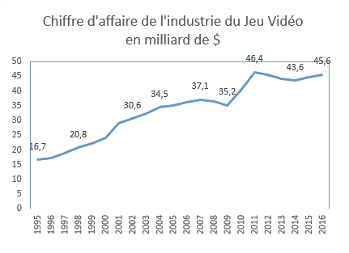

L’industrie du jeu vidéo, levier de renouvellement pour les entreprises
Introduction :
Depuis Pong, le jeu vidéo a pris une ampleur inégalité dans nos sociétés. En effet, en 1972 Pong voit le jour, il est l’un des premiers jeux vidéo, il sera suivi par d’autres grands titres comme Tetris, Pacman ou encore Space Invaders. A cette époque, très peu d’entreprises contribuent à développer ce domaine d’activité, les jeux vidéo resteront pendant un moment un loisir cantonné aux bornes d’arcade. C’est durant cette période, qui est appelé « l’âge d’or de l’arcade », que les premières grandes entreprises du jeu vidéo feront leur apparition comme Atari ou encore Activision
A peine 8 ans après Pong, le chiffre d’affaire des entreprises dans ce secteur plafonne les 5 milliards de dollars de chiffre d’affaire aux Etats-Unis, le jeux vidéo prend l’ascendant et commence à s’imposer comme secteur en croissance dans de nombreuses régions du monde. Vers le milieu des années 1980, l’ordinateur personnel commencera sa diffusion à grande échelle et les jeux vidéo emboiteront le pas. Les consoles de salon commence à se démocratiser de plus en plus, notamment avec les consoles de Nintendo comme la Famicom ou encore la Master Système de Saga.
Les années 90 verront naitre d’autres grandes entreprises du jeu vidéo comme Blizzard, de nouvelles licences comme Wofenstein ou encore Doom mais surtout, ce sera le début de « la guerre des consoles » qui se poursuit encore de nos jours. En effet, les grands constructeurs comme Nintendo, Sony et plus tard Microsoft vont sortir successivement leur console, de plus en plus perfectionnées. Ainsi, le jeu vidéo prendra une place de plus en plus importante dans la société, devenant un marché porteur pour l’économie.
Certaines entreprises se sont d’ailleurs servie de ce secteur d’activité porteur pour se renouveler ou changer totalement leur orientation stratégique. Nous parlerons dans ces cas d’Ubisoft ou encore de Nintendo, qui on réussit à créer leur place dans ce secteur et dont la notoriété n’est plus à démontrer.
Ainsi, nous pouvons nous demander : Comment l’industrie du jeu vidéo a permis à certaines entreprises de se renouvelées ?
Pour répondre à cette problématique, nous allons utiliser un plan en 2 parties, qui traiteront d’étude de cas sur les entreprises Ubisoft et Nintendo pour illustrer les changements de secteur d’activité.
- Le jeu vidéo comme renouvellement total : le cas Ubisoft
- A) Ubisoft, une entreprise agricole avec des perfectives toutes autres
- B) Une entreprise avec le vent en poupe
- Le jeu vidéo comme levier d’impulsion : le cas Nintendo
- A) Nintendo, entre jeux de carte et ambitions de diversification
- B) La domination de Nintendo
- C) Nintendo en perte de vitesse
- Conclusion
Cliquez ici pour commencer l'exposé !
Developpé par Limou & Pauwels, contactez-nous ! Copyright: 2017-2018